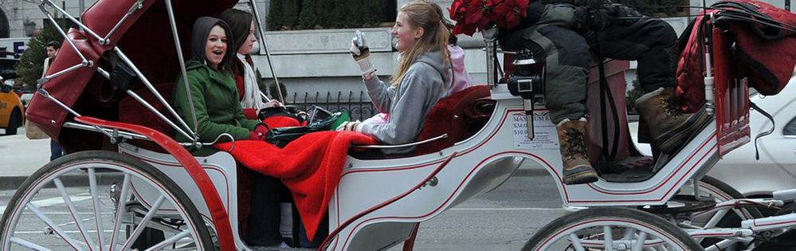
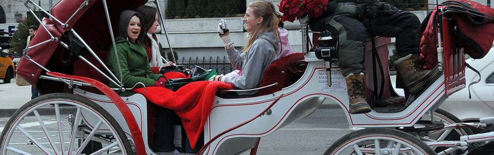

Lets Save This CIty
As a PSA I want to highlight the beauty of NYC.As a public service anouncement, I would like to remind everyone that we are all new yorkers, As new yorkers it is our responsibility to take care of out home. In our actual homes we are expected to clean up after ourseleves,
otherwise we would all be living like pigs. New York has almost nearly 300 years of history since the Dutch first settled in this land back in 1624. If they could only imagine what New York would look like now, i'm sure they would
have been blown away. Now it is our resposibility to preserve this city for the future generations to enjoy, From the massive sized central Park to the cherry blossem trees at Roosevelt Island, the translucent waters at Prospect Park
and the Tron like skyline view from Brooklyn Park or across the pond in New Jersey, the magnificent architecture around the city, which makes it look like God himself took parts of the world and dropped those neighborhoods right next to each other.
No where else in the would can you start at Fidi, walk a few blocks to Chinatown, walk a few more blocks to little Ilaty, which is right next to Soho, Little Tokyo. Its taken 300 years to perfect this melting pot with nothing but
the best ingredients from each culture, abd together we have created a who new flavor that we must preserve.
We must step up and do what we can to start cleaing up the City. From the overuse of plastics to the excess creation of waste. the preservation of gardens, reading to the blind, helping the elderly, Feeding the poor. There is a
great NPO (non profit organization) called New York Cares. NYCares has a lot of amazing events that really puts a smmile on your face. I have completed a few porjects already with them, teaching the youth how to play chess, feeding the homeless.
and many more to come. Most of the volunteers aren't crazy fanitcs that only care about the saving the planet and hugging every tree they see, everyone i've meet throuh NYCares was a average joe or jane. I"ve meet people who were corperate lawyers, shift supervisors at Whole-Foods,
Bank tellers, CEOs of companies, and some full/part time students. Joining NYCares is a great way to help and give back to the city as well as make new connections.
Please visit New York Care for more information about how you can volunteer.